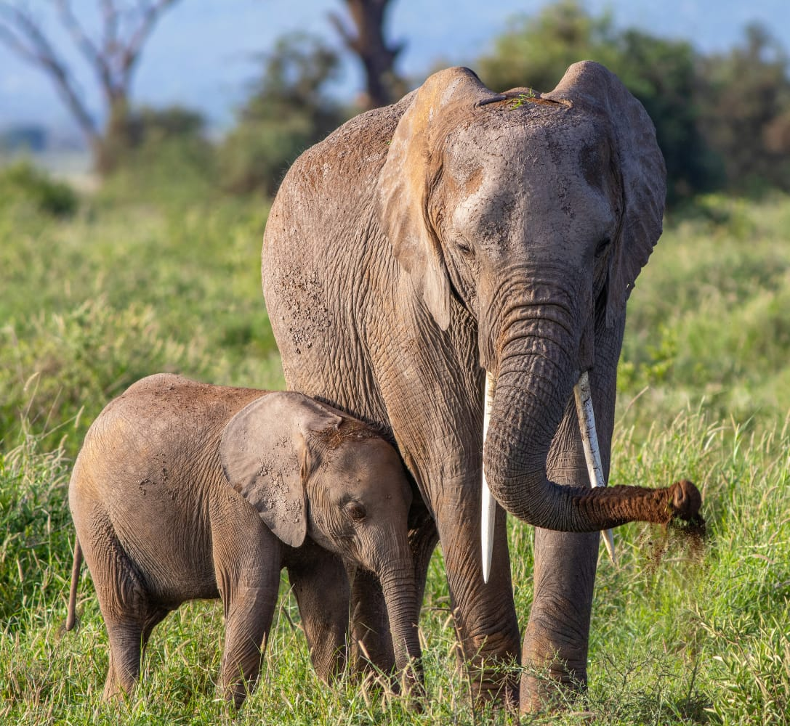

4 Days / 3 Nights
Morning pick-up from your hotel and departure to Tsavo East. Enjoy a game drive through the park, renowned for its red elephants, diverse wildlife and spectacular landscapes. Dinner and overnight.
Morning game drive before continuing to Taita Hills. Enjoy an afternoon game drive and experience the beautiful surroundings of the Taita Hills. Dinner and overnight at Salt Lick Safari Lodge.
Morning game drive before departing for Tsavo West. Explore the park’s dramatic landscapes and rich wildlife, with a visit to the famous Mzima Springs. Dinner and overnight.
Enjoy an early morning game drive before departing the park and returning to your hotel or chosen drop-off point.
Tsavo’s iconic red elephants, Big Five, diverse wildlife and bird species, Taita Hills, the unique Salt Lick Safari Lodge, Mzima Springs and spectacular volcanic landscapes.
L.B:From $1950
M.R:From $2220